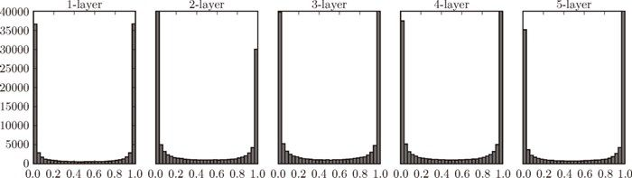
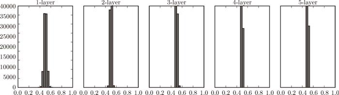
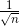
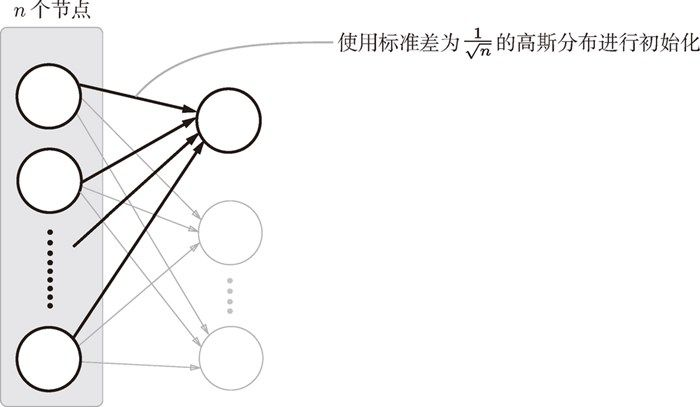
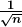
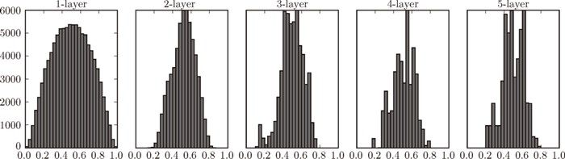
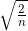
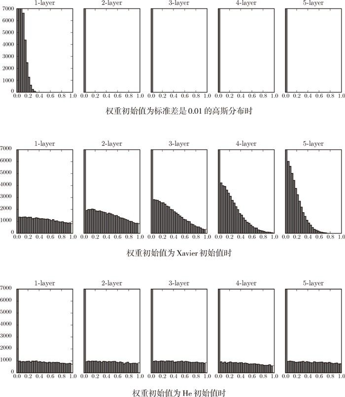
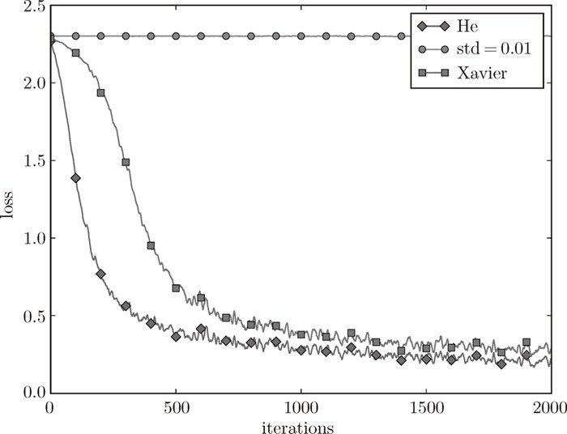

各层的激活值的分布都要求有适当的广度。为什么呢？因为通过在各层间传递多样性的数据，神经网络可以进行高效的学习。反过来，如果传递的是有所偏向的数据，就会出现梯度消失或者“表现力受限”的问题，导致学习可能无法顺利进行。
各层的激活值的分布都要求有适当的广度。为什么呢？因为通过在各层间传递多样性的数据，神经网络可以进行高效的学习。反过来，如果传递的是有所偏向的数据，就会出现梯度消失或者“表现力受限”的问题，导致学习可能无法顺利进行。
在神经网络的学习中，权重的初始值特别重要。实际上，设定什么样的权重初始值，经常关系到神经网络的学习能否成功。本节将介绍权重初始值的推荐值，并通过实验确认神经网络的学习是否会快速进行。
后面我们会介绍抑制过拟合、提高泛化能力的技巧——权值衰减（weight decay）。简单地说，权值衰减就是一种以减小权重参数的值为目的进行学习的方法。通过减小权重参数的值来抑制过拟合的发生。
如果想减小权重的值，一开始就将初始值设为较小的值才是正途。实际上，在这之前的权重初始值都是像 0.01 * np.random.randn(10, 100) 这样，使用由高斯分布生成的值乘以 0.01 后得到的值（标准差为 0.01 的高斯分布）。
如果我们把权重初始值全部设为 0 以减小权重的值，会怎么样呢？从结论来说，将权重初始值设为 0 不是一个好主意。事实上，将权重初始值设为 0 的话，将无法正确进行学习。
为什么不能将权重初始值设为 0 呢？严格地说，为什么不能将权重初始值设成一样的值呢？这是因为在误差反向传播法中，所有的权重值都会进行相同的更新。比如，在 2 层神经网络中，假设第 1 层和第 2 层的权重为 0。这样一来，正向传播时，因为输入层的权重为 0，所以第 2 层的神经元全部会被传递相同的值。第 2 层的神经元中全部输入相同的值，这意味着反向传播时第 2 层的权重全部都会进行相同的更新（回忆一下“乘法节点的反向传播”的内容）。因此，权重被更新为相同的值，并拥有了对称的值（重复的值）。这使得神经网络拥有许多不同的权重的意义丧失了。为了防止“权重均一化”（严格地讲，是为了瓦解权重的对称结构），必须随机生成初始值。
观察隐藏层的激活值 2（激活函数的输出数据）的分布，可以获得很多启发。这里，我们来做一个简单的实验，观察权重初始值是如何影响隐藏层的激活值的分布的。这里要做的实验是，向一个 5 层神经网络（激活函数使用 sigmoid 函数）传入随机生成的输入数据，用直方图绘制各层激活值的数据分布。这个实验参考了斯坦福大学的课程 CS231n [5]。
2这里我们将激活函数的输出数据称为“激活值”，但是有的文献中会将在层之间流动的数据也称为“激活值”。
进行实验的源代码在 ch06/weight_init_activation_histogram.py 中，下面展示部分代码。
import numpy as np
import matplotlib.pyplot as plt
def sigmoid(x):
return 1 / (1 + np.exp(-x))
x = np.random.randn(1000, 100) # 1000个数据
node_num = 100 # 各隐藏层的节点（神经元）数
hidden_layer_size = 5 # 隐藏层有5层
activations = {} # 激活值的结果保存在这里
for i in range(hidden_layer_size):
if i != 0:
x = activations[i-1]
w = np.random.randn(node_num, node_num) * 1
z = np.dot(x, w)
a = sigmoid(z) # sigmoid函数
activations[i] = a
这里假设神经网络有 5 层，每层有 100 个神经元。然后，用高斯分布随机生成 1000 个数据作为输入数据，并把它们传给 5 层神经网络。激活函数使用 sigmoid 函数，各层的激活值的结果保存在 activations 变量中。这个代码段中需要注意的是权重的尺度。虽然这次我们使用的是标准差为 1 的高斯分布，但实验的目的是通过改变这个尺度（标准差），观察激活值的分布如何变化。现在，我们将保存在 activations 中的各层数据画成直方图。
# 绘制直方图
for i, a in activations.items():
plt.subplot(1, len(activations), i+1)
plt.title(str(i+1) + "-layer")
plt.hist(a.flatten(), 30, range=(0,1))
plt.show()
运行这段代码后，可以得到图 6-10 的直方图。

图 6-10 使用标准差为 1 的高斯分布作为权重初始值时的各层激活值的分布
从图 6-10 可知，各层的激活值呈偏向 0 和 1 的分布。这里使用的 sigmoid 函数是 S 型函数，随着输出不断地靠近 0（或者靠近 1），它的导数的值逐渐接近 0。因此，偏向 0 和 1 的数据分布会造成反向传播中梯度的值不断变小，最后消失。这个问题称为梯度消失（gradient vanishing）。层次加深的深度学习中，梯度消失的问题可能会更加严重。
下面，将权重的标准差设为 0.01，进行相同的实验。实验的代码只需要把设定权重初始值的地方换成下面的代码即可。
# w = np.random.randn(node_num, node_num) * 1
w = np.random.randn(node_num, node_num) * 0.01
来看一下结果。使用标准差为 0.01 的高斯分布时，各层的激活值的分布如图 6-11 所示。

图 6-11 使用标准差为 0.01 的高斯分布作为权重初始值时的各层激活值的分布
这次呈集中在 0.5 附近的分布。因为不像刚才的例子那样偏向 0 和 1，所以不会发生梯度消失的问题。但是，激活值的分布有所偏向，说明在表现力上会有很大问题。为什么这么说呢？因为如果有多个神经元都输出几乎相同的值，那它们就没有存在的意义了。比如，如果 100 个神经元都输出几乎相同的值，那么也可以由 1 个神经元来表达基本相同的事情。因此，激活值在分布上有所偏向会出现“表现力受限”的问题。
接着，我们尝试使用 Xavier Glorot 等人的论文 [9] 中推荐的权重初始值（俗称“Xavier 初始值”）。现在，在一般的深度学习框架中，Xavier 初始值已被作为标准使用。比如，Caffe 框架中，通过在设定权重初始值时赋予 xavier 参数，就可以使用 Xavier 初始值。
Xavier 的论文中，为了使各层的激活值呈现出具有相同广度的分布，推导了合适的权重尺度。推导出的结论是，如果前一层的节点数为 n，则初始值使用标准差为  的分布 3（图 6-12）。
3Xavier 的论文中提出的设定值，不仅考虑了前一层的输入节点数量，还考虑了下一层的输出节点数量。但是，Caffe 等框架的实现中进行了简化，只使用了这里所说的前一层的输入节点进行计算。

图 6-12 Xavier 初始值：与前一层有 n 个节点连接时，初始值使用标准差为  的分布
使用 Xavier 初始值后，前一层的节点数越多，要设定为目标节点的初始值的权重尺度就越小。现在，我们使用 Xavier 初始值进行实验。进行实验的代码只需要将设定权重初始值的地方换成如下内容即可（因为此处所有层的节点数都是 100，所以简化了实现）。
node_num = 100 # 前一层的节点数 w = np.random.randn(node_num, node_num) / np.sqrt(node_num)
使用 Xavier 初始值后的结果如图 6-13 所示。从这个结果可知，越是后面的层，图像变得越歪斜，但是呈现了比之前更有广度的分布。因为各层间传递的数据有适当的广度，所以 sigmoid 函数的表现力不受限制，有望进行高效的学习。

图 6-13 使用 Xavier 初始值作为权重初始值时的各层激活值的分布
图 6-13 的分布中，后面的层的分布呈稍微歪斜的形状。如果用
tanh函数（双曲线函数）代替sigmoid函数，这个稍微歪斜的问题就能得到改善。实际上，使用tanh函数后，会呈漂亮的吊钟型分布。tanh函数和sigmoid函数同是 S 型曲线函数，但tanh函数是关于原点 (0, 0) 对称的 S 型曲线，而sigmoid函数是关于 (x, y)=(0, 0.5) 对称的 S 型曲线。众所周知，用作激活函数的函数最好具有关于原点对称的性质。
Xavier 初始值是以激活函数是线性函数为前提而推导出来的。因为 sigmoid 函数和 tanh 函数左右对称，且中央附近可以视作线性函数，所以适合使用 Xavier 初始值。但当激活函数使用 ReLU 时，一般推荐使用 ReLU 专用的初始值，也就是 Kaiming He 等人推荐的初始值，也称为“He 初始值”[10]。当前一层的节点数为 n 时，He 初始值使用标准差为 的高斯分布。当 Xavier 初始值是 时，（直观上）可以解释为，因为 ReLU 的负值区域的值为 0，为了使它更有广度，所以需要 2 倍的系数。
现在来看一下激活函数使用 ReLU 时激活值的分布。我们给出了 3 个实验的结果（图 6-14），依次是权重初始值为标准差是 0.01 的高斯分布（下文简写为“std = 0.01”）时、初始值为 Xavier 初始值时、初始值为 ReLU 专用的“He 初始值”时的结果。

图 6-14 激活函数使用 ReLU 时，不同权重初始值的激活值分布的变化
观察实验结果可知，当“std = 0.01”时，各层的激活值非常小 4。神经网络上传递的是非常小的值，说明逆向传播时权重的梯度也同样很小。这是很严重的问题，实际上学习基本上没有进展。
4各层激活值的分布平均值如下。1 层 : 0.0396，2 层 : 0.00290，3 层 : 0.000197，4 层 : 1.32e-5，5 层 : 9.46e-7。
接下来是初始值为 Xavier 初始值时的结果。在这种情况下，随着层的加深，偏向一点点变大。实际上，层加深后，激活值的偏向变大，学习时会出现梯度消失的问题。而当初始值为 He 初始值时，各层中分布的广度相同。由于即便层加深，数据的广度也能保持不变，因此逆向传播时，也会传递合适的值。
总结一下，当激活函数使用 ReLU 时，权重初始值使用 He 初始值，当激活函数为 sigmoid 或 tanh 等 S 型曲线函数时，初始值使用 Xavier 初始值。这是目前的最佳实践。
下面通过实际的数据，观察不同的权重初始值的赋值方法会在多大程度上影响神经网络的学习。这里，我们基于 std = 0.01、Xavier 初始值、He 初始值进行实验（源代码在 ch06/weight_init_compare.py 中）。先来看一下结果，如图 6-15 所示。

图 6-15 基于 MNIST 数据集的权重初始值的比较：横轴是学习的迭代次数（iterations），纵轴是损失函数的值（loss）
这个实验中，神经网络有 5 层，每层有 100 个神经元，激活函数使用的是 ReLU。从图 6-15 的结果可知，std = 0.01 时完全无法进行学习。这和刚才观察到的激活值的分布一样，是因为正向传播中传递的值很小（集中在 0 附近的数据）。因此，逆向传播时求到的梯度也很小，权重几乎不进行更新。相反，当权重初始值为 Xavier 初始值和 He 初始值时，学习进行得很顺利。并且，我们发现 He 初始值时的学习进度更快一些。
综上，在神经网络的学习中，权重初始值非常重要。很多时候权重初始值的设定关系到神经网络的学习能否成功。权重初始值的重要性容易被忽视，而任何事情的开始（初始值）总是关键的，因此在结束本节之际，再次强调一下权重初始值的重要性。